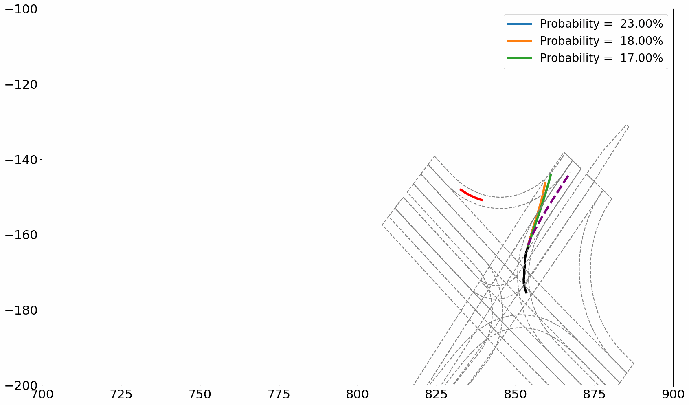
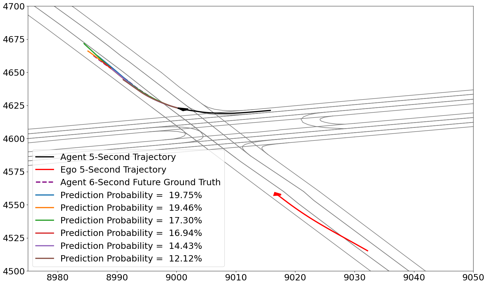

|
Yunchang Zhang(张运昌), Ph.D.
|
Vehicle Motion Predictions with HD-Map

Argoverse 2 Motion Forecasting Demo

- #1 in Missing Rate (K=1);
- #1 in minFDE (K=1);
- #1 in minADE(K=1);
- #6 in minFDE(K=6);
- #1 in minADE(K=1);
- #8 in Missing Rate (K=6); and
- #11 in minADE(K=6).
Road User Detection, Tracking, and Predictions
Road User Detection and Tracking